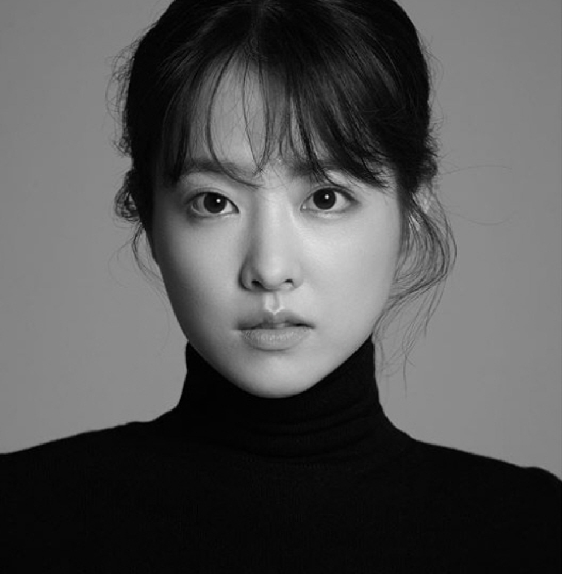

PARK BO YOUNG
PROFILE
출생1990년 2월 12일
신장158cm
몸무게44kg
FILMOGRAPHY
2021tvN 어느날 우리집 현관으로 멸망이 들어왔다.
2019tvN 어비스
2018영화 너의 결혼식
2015tvN 오 나의 귀신님
어느날 우리집 현관으로 멸망이 들어왔다
주연 탁동경 역
기간 2021.05.10 ~ 2021.06.29
채널 tvN
드라마 소개
사라지는 모든 것들의 이유가 되는 존재 ‘멸망’과 사라지지 않기 위해 목숨을 건 계약을 한 인간 ‘동경’의 아슬아슬한 목숨담보 판타지 로맨스
어비스
주연 고세연 역
기간 2019.05.06.~2019.06.25.
채널 tvN
드라마 소개
"영혼 소생 구슬" 어비스를 통해 생전과 180도 다른 '반전 비주얼'로 부활한 두 남녀가 자신을 죽인 살인자를 쫓는 반전 비주얼 판타지
너의 결혼식
주연 환승희 역
개봉 2018.08.22.
관객 수 282만
영화 소개
고3 여름, 전학생 ‘승희’(박보영)를 보고 첫눈에 반한 ‘우연’(김영광). 승희를 졸졸 쫓아다닌 끝에 마침내 공식커플로 거듭나려던 그때! 잘 지내라는 전화 한 통만 남긴 채 승희는 사라져버리고, 우연의 첫사랑은 그렇게 막을 내리는 듯했다. 1년 뒤, 승희의 흔적을 쫓아 끈질긴 노력으로 같은 대학에 합격한 우연. 그런데 그의 앞을 가로막은 건… 다름 아닌 그녀의 남.자.친.구! 예술로 빗나가는 타이밍 속 다사다난한 그들의 첫사랑 연대기는 계속된다!
오 나의 귀신님
주연 도봉순 역
기간 2015.07.03.~2015.08.22.
채널 tvN
드라마 소개
'내 안에 음탕한 처녀 귀신이 산다!' 음탕한 처녀 귀신이 빙의 된 소심한 주방 보조 '나봉선'과 자뻑 스타 셰프 '강선우'가 펼치는 응큼발칙 빙의 로맨스
늑대소년
주연 순이 역
개봉 2012.10.31.
관객 수 706만
영화 소개
가족들과 한적한 마을로 이사 간 소녀는 어둠 속에 몸을 숨긴 의문의 늑대소년을 발견한다. 야생의 눈빛으로 사람 같지 않은 행동을 보이는 소년에게 마음이 쓰인 소녀는 먹을 것을 보고 기다리는 법, 옷 입는 법, 글을 읽고 쓰는 법 등 소년에게 세상에서 살아가는 방법들을 하나씩 가르쳐준다. 태어나 처음으로 자신을 향해 손을 내밀어준 소녀에게 애틋한 감정이 싹트는 소년. 그러던 어느 날 소년의 숨겨져 있던 위험한 본성이 드러나고, 소년은 순식간에 마을 사람들에게 두려움과 공포의 대상이 되어버리는데...
과속스캔들
주연 황정남 / 황제인 역
개봉 2008.12.03.
관객 수 822만
영화 소개
한때 아이돌 스타로 10대 소녀 팬들의 영원한 우상이었던 남현수(차태현). 지금은 서른 중반의 나이지만, 그래도 아직까지는 잘나가는 연예인이자, 청취율 1위의 인기 라디오 DJ. 어느 날 애청자를 자처하며 하루도 빠짐없이 라디오에 사연을 보내오던 황.정.남(박보영)이 느닷없이 찾아와 자신이 현수가 과속해서 낳은 딸이라며 바득바득 우겨대기 시작하는데!!
영화 부문🥇
2009 제6회 맥스무비 최고의 영화상 최고의 신인배우상
2009 제17회 대한민국문화연예대상 영화부문 신인상
2009 제46회 대종상영화제 여자 인기상
2009 제45회 백상예술대상 영화부문 여자 인기상
2009 제32회 황금촬영상 시상식 신인여우상
2009 제12회 디렉터스 컷 어워드 올해의 신인연기자상
2009 제30회 청룡영화상 신인여우상
2012 제4회 피어선 영상페스티벌 최고여자배우상
2014 제22회 대한민국문화연예대상 영화부문 우수연기상
2015 제15회 대한민국청소년영화제 여자배우부문 인기영화인
2015 제36회 청룡영화상 인기스타상
드라마 부문🥇
2007 SBS 연기대상 여자 아역상
2015 제4회 에이판 스타 어워즈 중편드라마부문 우수연기상
2016 제4회 미국 드라마피버어워즈 베스트 여배우상
2017 제1회 더 서울어워즈 드라마부문 여우주연상
2017 제12회 서울 드라마 어워즈 한류드라마 여자 연기자상
2017 제8회 대한민국 대중문화예술상 문화체육관광부장관 표창
2018 제23회 소비자의 날 문화연예 시상식 관객이 뽑은 올해의 배우 부문
공지사항
NETFLIX <정신병동에도 아침이 와요>
배우 박보영 씨가 출연하는 NETFLIX 드라마 <정신병동에도 아침이 와요>가 2023년도 4분기에 방송 예정입니다.
영화 <콘크리트 유토피아>
배우 박보영씨가 출연하는 한국영화 <콘크리트 유토피아>가 2023년 8월 개봉 예정입니다.